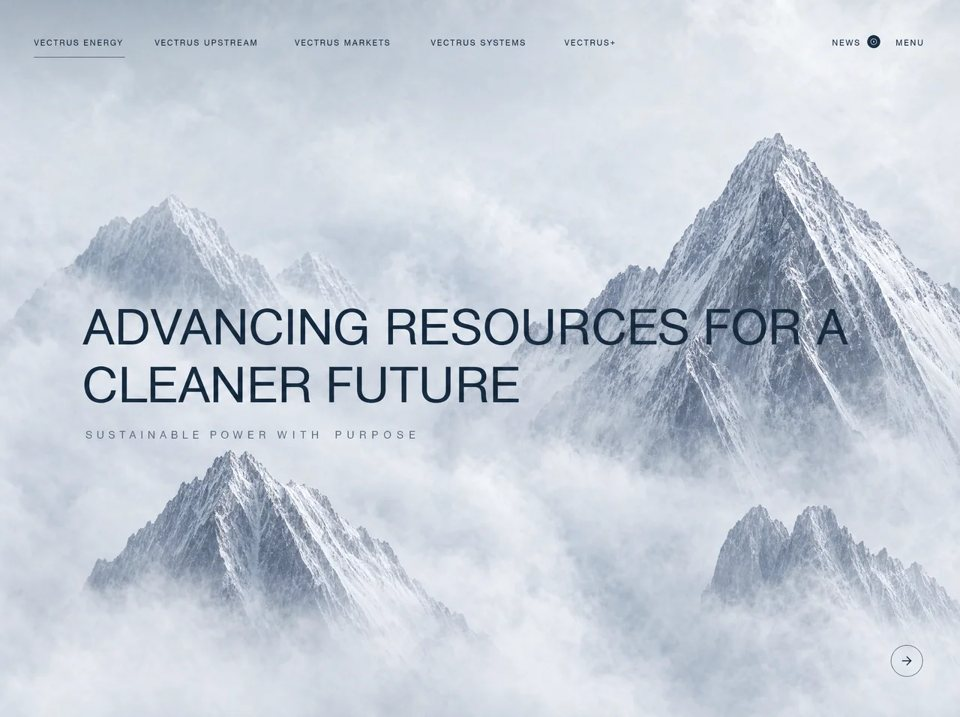

Vectrus Energy
Editorialeditorialyilai-ai 公开页面
收录时间：2026-08-28正文：8,300 字符

本地预览图 · jpeg
完整提示词
Build a standalone cinematic one-page site that recreates this EXACTLY. Do not invent extra sections, extra copy, extra logos, extra overlays, GSAP, Lenis, or a different video. Match structure, copy, colors, type, spacing, breakpoints, animations, and scroll-video logic.
STACK
- Vite + React 18 + TypeScript + Tailwind CSS 3
- lucide-react icons: ArrowRight, ArrowDown, ChevronUp, Info, X
- mp4box ^0.5.2 for WebCodecs frame extraction
- Path alias @ -> src
- No routing. Single App. One full-viewport sticky scene, 500vh tall scroll track.
VIDEO (use this URL exactly, nowhere else)
https://d8j0ntlcm91z4.cloudfront.net/user_38xzZboKViGWJOttwIXH07lWA1P/hf_20260821_114821_a8ca298f-be2c-4613-a4dd-51b69e16bbde.mp4
The clip is a high-key aerial fly-through: pale clouds, mist, mountains, then darker atmospheric landscape. Full-bleed object-cover background. No poster image. No controls. muted, playsInline, preload="auto". Video is NEVER autoplayed as a timeline; playback position is driven by scroll.
FONT
Load exactly:
<link href="https://db.onlinewebfonts.com/c/95cecf452d3208890088a5b4c19c7ecf?family=Helvetica+Neue+ME" rel="stylesheet">
body font-family: 'Helvetica Neue ME', 'Helvetica Neue', Helvetica, Arial, sans-serif;
html { scroll-behavior: smooth; }
body { overflow-x: hidden; }
Title: "Scroll Tied Video Section"
COLOR
const DARK = '#1D3045'
Navy text on light cloud frames. White text on dark later frames.
No color overlays / gradients on the video. Text sits directly on the video.
PAGE ARCHITECTURE
Outer: relative h-[500vh] (this is the scroll distance)
Inner sticky: sticky top-0 w-full h-screen overflow-hidden
Inside sticky:
1) <video> full cover
2) <canvas width=1920 height=1080> absolute inset-0 object-cover, opacity 1 when frame-bank is live else 0, transition-opacity duration-300. Canvas draws decoded frames so scrubbing is smooth (video.currentTime seeking is fallback only).
3) Overlay absolute inset-0 pointer-events-none containing Navbar + 3 sequential sections.
SCROLL PROGRESS
p = clamp(0, 1, window.scrollY / (container.offsetHeight - window.innerHeight))
Recompute span on resize and orientationchange.
TEXT SECTIONS ARE SEQUENTIAL (previous fully fades out before next appears)
s1Opacity:
p < 0.20 → 1
else → max(0, 1 - (p - 0.20) / 0.08)
s2Opacity:
p < 0.32 → 0
p < 0.40 → (p - 0.32) / 0.08
p < 0.55 → 1
else → max(0, 1 - (p - 0.55) / 0.08)
s3Opacity:
p < 0.67 → 0
p < 0.75 → (p - 0.67) / 0.08
else → 1
Each section: absolute inset-0, style opacity + transition 'opacity 0.1s ease-out'
Children use Stagger: visible when section opacity > 0.3
Stagger: opacity 0→1, translateY(24px)→0, 0.8s cubic-bezier(0.16,1,0.3,1), delay in ms.
NAVBAR (absolute top, z-50, pointer-events-auto)
Padding: px-6 sm:px-8 md:px-12 pt-8 sm:pt-12 pb-6
flex items-center justify-between
Color flips at p > 0.55: DARK → white (duration-500)
Desktop lg+: left cluster of 5 links, gap-8 xl:gap-10
VECTRUS ENERGY (active, 2px underline -bottom-3 full width)
VECTRUS UPSTREAM
VECTRUS MARKETS
VECTRUS SYSTEMS
VECTRUS+
Link style: text-xs tracking-[0.15em] uppercase font-medium, hover:opacity-70
Nav entrance: after 200ms, each link fades/slides from translateY(-12px), opacity 0.6s cubic-bezier(0.16,1,0.3,1), delay i*80+100ms
Right cluster (hidden below sm):
NEWS (text-xs tracking-[0.2em] uppercase font-medium) + 20px circle filled with current nav color, Info icon size 10 inverted
MENU label same type (lg+: span, below lg: button that opens overlay)
Right cluster delay 500ms same entrance
Mobile <lg: hamburger left, 3 bars:
bar 24x2, 24x2, 16x2, gap 5px, color follows isLight
Hamburger opens full-screen overlay.
MOBILE MENU OVERLAY
fixed inset-0 z-[100], background DARK
open: opacity-100 visible; closed: opacity-0 invisible; duration-500 ease cubic-bezier(0.4,0,0.2,1)
inner panel: closed -translate-y-8, open translate-y-0
Close: top-right px-6 sm:px-8 pt-8 sm:pt-12, 40px circle border-white/30, X 18, hover:border-white
Links centered vertically, px-8 sm:px-12, py-3, text-2xl sm:text-3xl font-light tracking-wide uppercase
active white, others white/60 hover:white
stagger in: delay i*60ms, translateY(20px)→0
Footer: NEWS and CONTACT, text-xs tracking-[0.2em] uppercase text-white/60, px-8 sm:px-12 pb-10
When open, body overflow hidden.
SECTION 1 (hero, left aligned, vertically centered)
px-6 sm:px-8 md:px-20 lg:px-32
H1: "Advancing resources for a cleaner future"
clamp(2rem,5vw,5rem) font-light uppercase leading-[1.2] color DARK
Subtitle below mt-6: "Sustainable power with purpose"
text-sm tracking-[0.3em] uppercase color DARK at 90% alpha (#1D304590)
Bottom-right absolute bottom-12 right-6 sm:right-8 md:right-12:
48px circle button, border DARK 50% alpha, ArrowRight 18, hover:opacity-70
Stagger delays: title 0, subtitle 150, button 300
SECTION 2 (center)
px-6 sm:px-8, flex center
max-w-[900px]
H2 clamp(1.5rem,4.5vw,4.5rem) font-extralight tracking-wide leading-[1.3] text-center uppercase
Copy exactly:
"We build lasting partnerships with vision " + span color DARK 80% "and precision" + " " + span color DARK 50% "across every frontier"
Right column absolute bottom-16 right-6 sm:right-8 md:right-12, flex-col items-center gap-4:
48px circle, border DARK 40%, ArrowDown 18
then mt-4 three dots: 8px solid DARK (active), 6px DARK 40%, 6px DARK 40%, gap-2
then 40px circle, border DARK 30%, ChevronUp 16, color DARK 80%, mt-2
Stagger delays: headline 0, down 200, dots 350, up 500
SECTION 3 (right aligned, white type — video is dark here)
flex items-center justify-end px-6 sm:px-8 md:px-20 lg:px-32
max-w-2xl text-left
Eyebrow: "Halder | Nordvik" text-white/60 text-lg tracking-wide mb-4
H2: "Fueling ambition," line break "shaping tomorrow."
clamp(2rem,4vw,4rem) font-light text-white leading-[1.2] uppercase tracking-wide mb-8
CTA row gap-4:
"Contact Nordvik" text-sm tracking-[0.3em] text-white/80 uppercase
40px white filled circle, gray-800 ArrowRight 16, hover:scale-110 duration-300
Stagger delays: 0 / 150 / 300
SMOOTH VIDEO SCROLL — SAME LOGIC (do not replace with GSAP or naive currentTime only)
Hook useVideoScrub(videoSrc):
Constants:
LERP_TAU = 8
SNAP = 0.002
LRU_MAX = 24
LEAD = 24
WATCHDOG = 60000 ms
State:
bank: {ts microseconds, blob webp}[]
lru: Map<index, ImageBitmap | null>
current / target times in seconds
ready, reverted, painted, building, dur
rAF loop every frame:
dt = min(0.1, deltaSeconds)
p = getProgress(); setScrollProgress(p)
if dur > 0:
target = p * dur
if prefers-reduced-motion: current = target
else:
current += (target - current) * (1 - exp(-dt * LERP_TAU))
if abs(target-current) < SNAP: current = target
if ready: draw nearest frame from bank
else: fallback: if not seeking and abs(video.currentTime - current) > 0.01, set video.currentTime = current
Frame bank (build after window load, skip if reduced-motion or no VideoDecoder):
fetch the CloudFront mp4 as ArrayBuffer
parse with MP4Box.createFile(), extract video track, configure VideoDecoder (codec + avcC/hvcC/vpcC/av1C description)
decode samples as EncodedVideoChunk (key vs delta)
throttle with LEAD so decode doesn't outrun blob encoding
each VideoFrame → offscreen canvas → toBlob('image/webp', 0.82) stored with timestamp
sort bank by ts
nearestIndex: binary search on timestamps (compare t*1e6)
warmLRU around i-1..i+2, createImageBitmap, evict oldest when size > LRU_MAX
first successful canvas paint → canvasLive true (canvas fades in over video)
if hardware decode fails, retry once with hardwareAcceleration: 'prefer-software'
60s watchdog → revert to video seeking fallback, hide canvas
CORS: fetch needs CloudFront CORS; video element still works as fallback if decode fails
Video element still renders underneath until canvas is live.
DO NOT
- Add extra brands, logos, cookie widgets, or “scroll down to discover”
- Change copy or nav labels
- Play the video with play()
- Use a different video host or local file
- Skip mobile overlay or hamburger
- Skip lerp (jumping frames = wrong)
DELIVER
Working Vite React TS app: index.html, App.tsx, useVideoScrub.ts, index.css, mp4box.d.ts, vite alias @, lucide-react + mp4box installed. Pixel-faithful to the spec above.把上面的提示词完整复制到支持长文本的 AI 工具中，再按需要替换品牌名、配色与文案。提示词描述的是整页结构与动效节奏，生成后建议在真实浏览器里检查首屏加载和移动端表现。
来源与版权
该条目来自公开提示词页面，原始出处信息未随页面提供。
提示词文本与预览素材的版权归原作者或原平台所有，本站仅作索引与归档。若你是权利人并希望移除本条内容，请通过联系方式告知。
同分类提示词
暂无同分类条目。